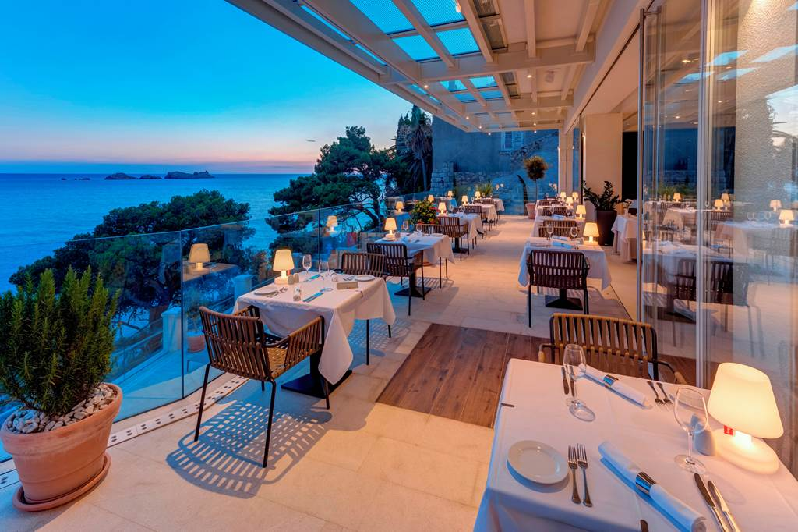
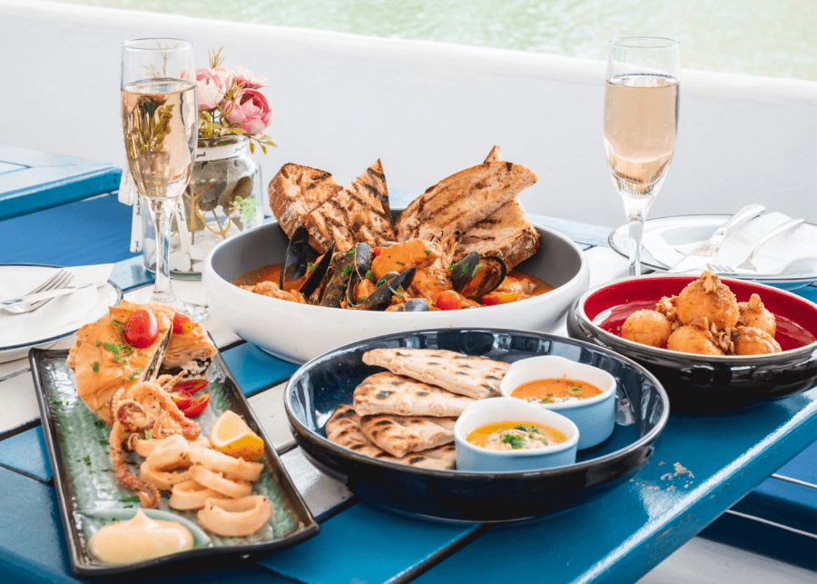
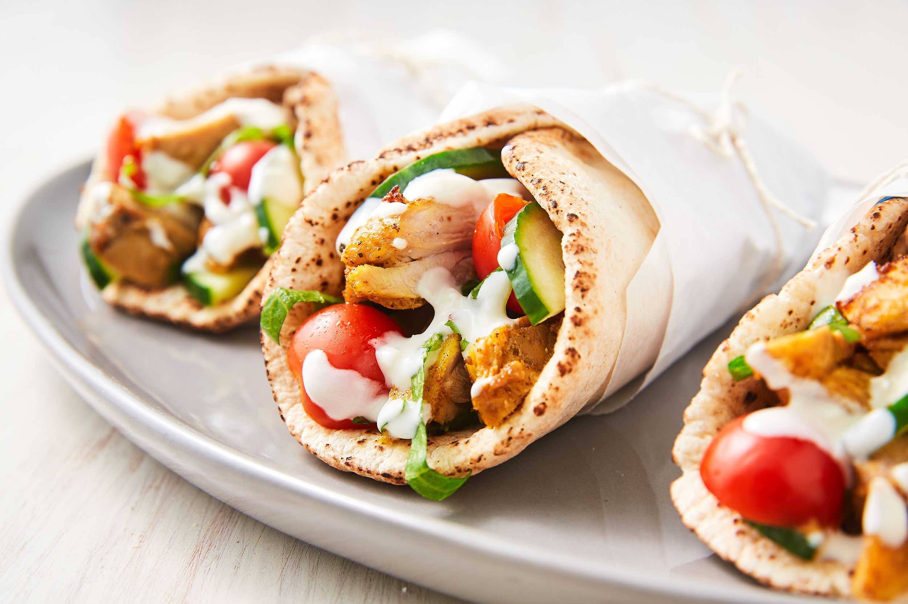
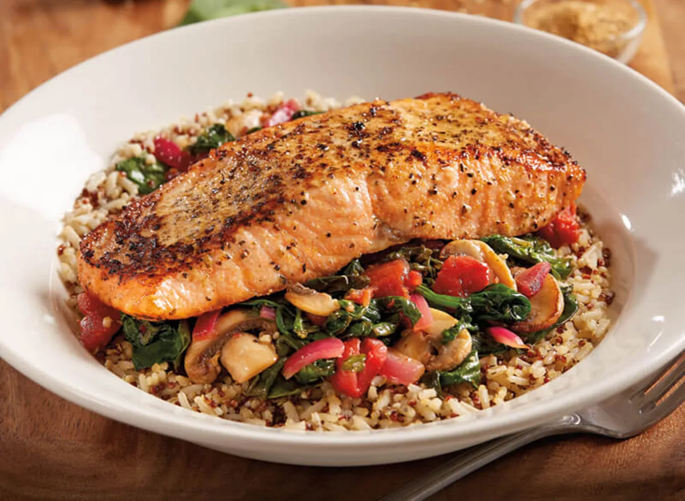
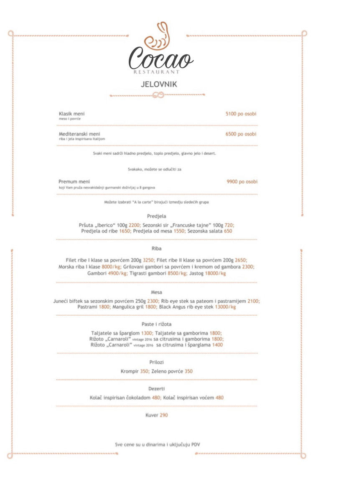

Uživajte u najlepsim sobama u gradu!
Apartman
Apartman je površine 35 m² i odlikuje ga izuzetan komfor i prijatan ambijent. U okviru apartmana nalaze se spavaća soba sa francuskim ležajem, luksuzno opremljen dnevni boravak sa garniturom za sedenje koja po potrebi postaje pomoćni ležaj za 2 osobe, prostrano kupatilo sa tuš kabinom (ogledalo, fen za kosu, bade mantil, papuče, šampon, kupka, sapun). Pojedini apartmani imaju i terasu. Apartman je opremljen po modernim standardima (LCD televizor, kablovska, bezalkoholni mini-bar, besplatan Wi-Fi, sef, prostor za odlaganje garderobe, telefon, električno kuvalo za čaj i kafu, ). U sobama i apartmanima nije dozvoljeno korišćenje i uživanje duvana i duvanskih proizvoda.

Deluks soba
Deluks soba je površine 32 m² i odlikuje ga izuzetan pogled na Jadransko more kroz stakleni zid koji se prostire duž cele sobe. U okviru delux sobe nalazi se veliki francuski ležaj, luksuzno opremljen prostor sa stolom i stolicama, prostrano kupatilo sa tuš kabinom (ogledalo, fen za kosu, bade mantil, papuče, šampon, kupka, sapun). Deluks sobe imaju terasu sa pogledom na jezero. Deluks soba je opremljena po modernim standardima (LCD televizor, kablovska, bezalkoholni mini-bar, besplatan Wi-Fi, sef, prostor za odlaganje garderobe, telefon, električno kuvalo za čaj i kafu, ). U sobama i apartmanima nije dozvoljeno korišćenje i uživanje duvana i duvanskih proizvoda..
Dvokrevetna soba
Dvokrevetna soba (površine od 25m²) sadrži bračni krevet ili 2 singl kreveta koja se, po potrebi, mogu spojiti, komplet opremljeno kupatilo (ogledalo, fen za kosu, bademantili, papuče, šampon, kupka, sapun) sa tuš kabinom. Pojedine sobe imaju i terasu. Soba je opremljena po modernim standardima (LCD televizor, kablovska, bezalkoholni mini-bar, besplatan Wi-Fi, sef, prostor za odlaganje garderobe, telefon, električno kuvalo za čaj i kafu, ). U sobama i apartmanima nije dozvoljeno korišćenje i uživanje duvana i duvanskih proizvoda.
Okusite čar mediteranske kuhinje!
   Insistirajući na isključivo svežim namirnicama za spremanje jela, restoran "Cocao" nudi veliki izbor predjela, salata, glavnih jela i deserta. Uz obaveznu svežu rečnu ribu i alasku čorbu, najveći deo ponude pripada špansko-mediteranskoj kuhinji. Reč je o specijalitetima poput tapasa (zalogaja), paelja, tortilja, specijaliteta od sveže morske ribe, ćuletona koji je "Cocao" prvi predstavio prestonici i po tome postao omiljeno mesto njegovih ljubitelja dobrog zalogaja.
Koliko pažnje posvećujemo našim jelima osetićete u baš svakom zalogaju!
Spa i Wellness
Oaza zdravlja i luksuza u našem SPA i Wellness centru je doživljaj koji možete priuštiti samo kod nas! Za potpuni komfor, gostima su na raspolaganju čiste i uredne prostorije za presvlačenje, peškiri i tuševi, posluženje vodom i kafom na recepciji SPA i Wellness centra, kao i pomoć našeg ljubaznog i profesionalnog osoblja u svakom trenutku.
Terapijski učinak morske soli važan je deo oporavka i boravka koji će Vam omogućiti dostizanje energetskog balansa organizma. Terapija vazduhom, slana terapija povećava količinu kiseonika i nivo serotonina, hormona sreće, mentalnu energiju i smanjuje osećaj depresije, nervoze i stresa, pozitivno utiče na rad srca i štitne žlezde.
Suva sauna sa temperaturom oko 90 stepeni Celzijusa i niskom vlažnošću vazduha ubrzava metabolizam, poboljšava izgled i zaustavlja starenje kože. Finska sauna ubrzava hemijske procese u organizmu, stimuliše aktiviranje imunog sistema i proizvodnju belih krvnih zrnaca.
Poluolimpijski bazen našeg hotela drži temperaturu vode između 28 i 20 stepeni. Bazen je širok 13 metara i dugačak 25, čime smo obezbedili dovoljan komfor posetiocima i opravdali očekivanja i najzahtevnijih posetilaca! Pored poluolimpijskog bazena, za Vašu porodicu smo napravili odvojeni bazen za decu u kome će Vaši najmiliji moći bezbedno da provedu vreme u vodi igrajući se u bazenčiću dubine 45cm sa temperaturom vode oko 28 stepeni.